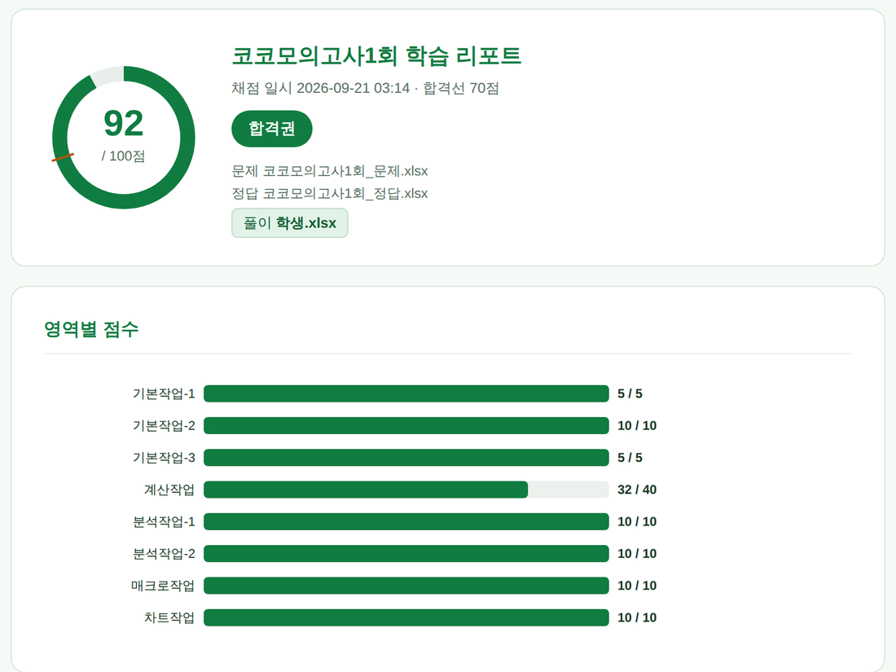
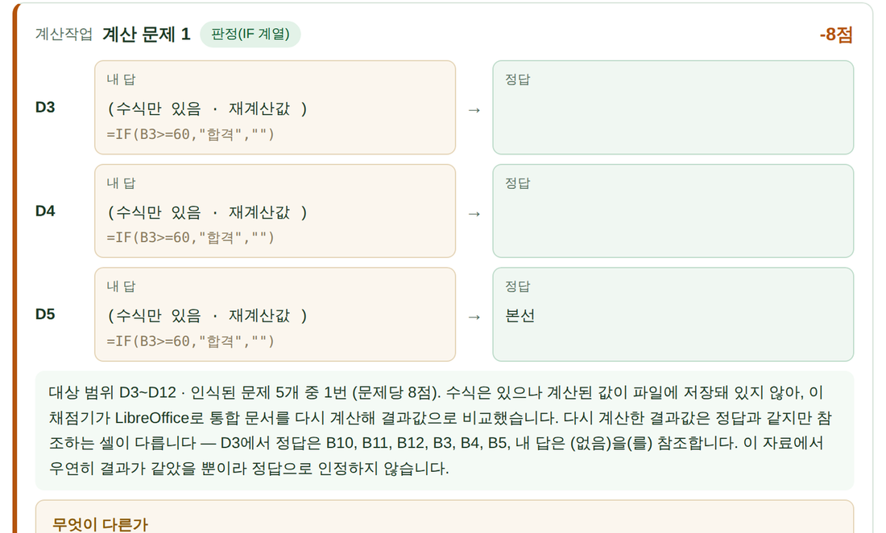
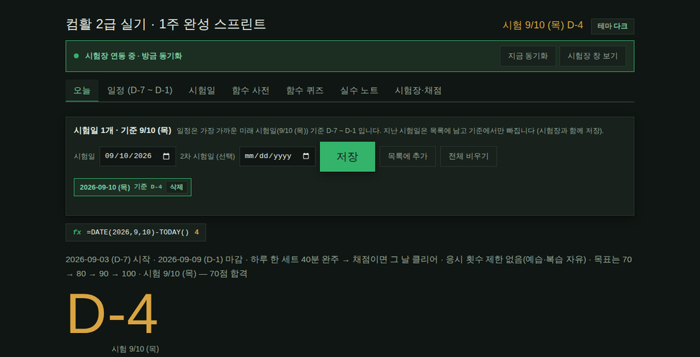

내가 푼 파일과 정답 파일을 셀 단위로 비교해 점수를 내고, 틀린 곳마다 내 답 → 정답을 보여 줍니다. 무료이고 소스도 전부 공개했습니다.
다운로드 (ZIP)Windows · Excel 2021 기준설치가 처음이면 아래 4단계를 그대로 따라 하세요



python.org 에서 받아 설치합니다. 설치 첫 화면에서 Add python.exe to PATH 를 꼭 체크하세요. 이거 하나 빼먹으면 나중에 전부 안 됩니다.
위 다운로드 버튼을 누르고, 새 폴더를 하나 만들어 거기에 푸세요. 바탕화면에 바로 풀면 프로그램이 바탕화면 전체를 훑어서 느려집니다.
푼 폴더 안에 이미 시험장 과 채점 폴더가 있습니다.
시험장.py · 코코시험장.pyw · 루틴.html 을
시험장 안으로, grade.py · 코코채점.pyw 를
채점 안으로 옮기세요. 나머지는 그대로 둡니다.
명령 프롬프트를 열고 pip install openpyxl 을 실행합니다.
그다음 코코시험장.pyw 를 더블클릭하면 끝입니다.
1단계에서 PATH 체크를 빼먹은 것입니다. 설치 파일을 다시 실행해
Modify → Next → Add Python to environment variables 를 켜세요.
또는 py -m pip install openpyxl 로 해 보세요.
파이썬 설치 때 tcl/tk 가 빠진 경우입니다. 설치 파일 재실행 → Modify → tcl/tk and IDLE 체크.
리포트에서 그 항목을 눌러 "내가 맞았다"로 뒤집으면 점수가 되돌아옵니다. 채점기는 1차 판단이고 최종 판단은 본인입니다. 계속 틀리면 이슈로 알려 주세요.
따로 등록하는 절차가 없습니다. 폴더에 _문제 파일과
_정답 파일을 같은 이름으로 짝지어 넣어 두면 알아서 한 세트로 묶습니다.
연습용 모의고사 2회분과 계산작업 드릴 24문항은 기본으로 들어 있습니다.